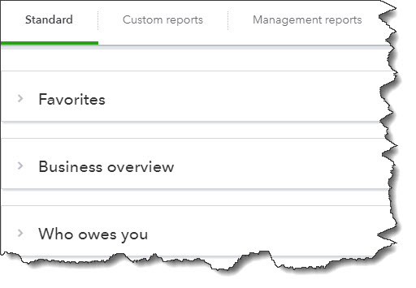
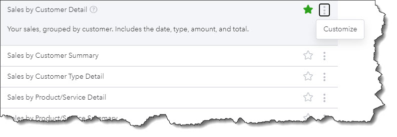
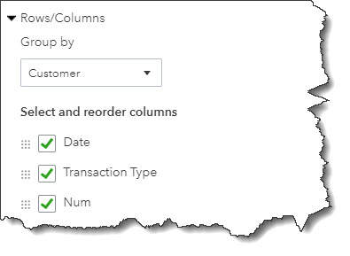

You should be running reports in QuickBooks Online on a weekly—if not daily—basis. Here’s what you need to know.
You can do a lot of your accounting work in QuickBooks Online by generating reports. You can maintain your customer and vendor profiles. Create and send transactions like invoices and sales receipts, and record payments. Enter and pay bills. Create time records and coordinate projects. Track your mileage and, if you have employees, process payroll.
These activities help you document your daily financial workflow. But if you’re not using QuickBooks Online’s reports, you can’t know how individual elements of your business like sales and purchases are doing. And you don’t know how all of those individual pieces fit together to create a comprehensive picture of how your business is performing.
QuickBooks Online’s reports are plentiful. They’re customizable. They’re easy to create. And they’re critical to your understanding of your company’s financial state. They answer the small questions, like, How many widgets do I need to order?, and the larger, all-encompassing questions like, Will my business make a profit this year?
Let’s look at how reports are organized in QuickBooks Online. Click Reports in the toolbar. You’ll see they are divided into three areas that you can access by clicking the labeled tabs. Standard refers to the comprehensive list of reports that QuickBooks Online offers, displayed in related groups. Custom reports are reports that you’ve customized and saved so you can use the same format later. And Management reports are very flexible, specialized reports that can be used by company owners and managers. 
A partial view of the list of QuickBooks Online’s Standard reports.
The Standard Reports area is where you’ll do most—if not all—of your reporting work. The list of available reports is divided into 10 categories. You’re most likely to spend most of your time in just a few of them, including:
The Business Overview contains advanced financial reports that we can run and analyze for you. The same goes for the For my accountant reports. Sales tax, Employees, and Payroll will be important to you if they’re applicable for your company.

Each individual report in QuickBooks Online has three related task options.
To open any report, you just click its title. If you want more information before you do that, just hover your cursor over the label. Click the question mark to see a brief description of the report. If you want to make the report a Favorite, click the star so it turns green. And clicking the three vertical dots opens the Customize link.
When you click the Customize link, a vertical panel slides out from the right, and the actual report is behind it, grayed out. Customization options vary from report to report. Some are quite complex, and others offer fewer options. The Sales by Customer Detail report, for example, provides a number of ways for you to modify the content of your report so it represents exactly the “slice” of data you want. So you can indicate your preferences in areas like:
Once you’ve run the report, you can click Save customization in the upper right corner and complete the fields in the window that opens. Your modification options will then be available when you click Custom reports, so you can run it again anytime with fresh data.

You can customize QuickBooks Online’s reports in a variety of ways.
We’ll go into more depth about report customization in a future issue. For now, we encourage you to explore QuickBooks Online’s reports and their modification options so that you’re familiar with them and can put them to use anytime. Let us know if you have any questions about the site’s reports, or if you need help making your use of QuickBooks Online more effective and productive.